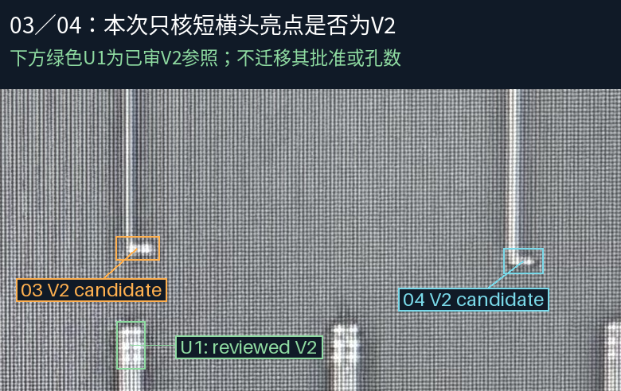
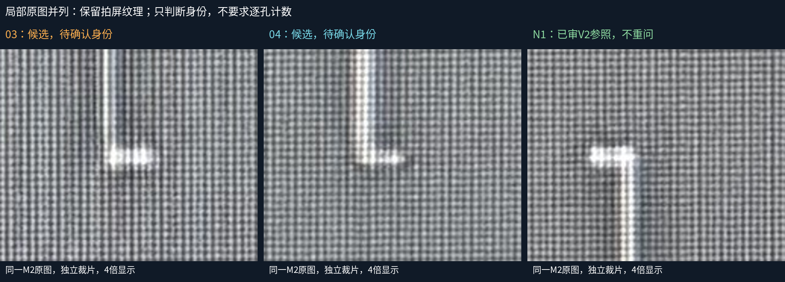
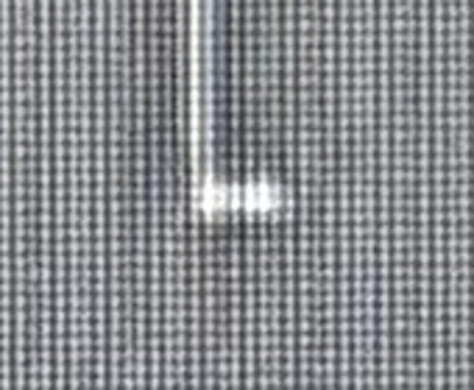

AI倾向两处为V2候选，但短横头亮面与拍屏网格仍有歧义。本次只确认孔层身份，不要求数孔，不批准M3或新增几何。N1和U1是已审参照，不重新索取批准。



Q1：03橙框短横头亮点是V2吗？Q2：04蓝框短横头亮点是V2吗？可答“03／04均为V2”、分别说明或“仍看不清”。
相邻T01–T06细M3及UP宽母线仅作为独立原生结构参照，没有用未经核实的叠加或设计相交指定载体。身份确认后再核端部、邻线和对应关系。当前模型30条金属、5个已审接口、34个设计候选孔保持。